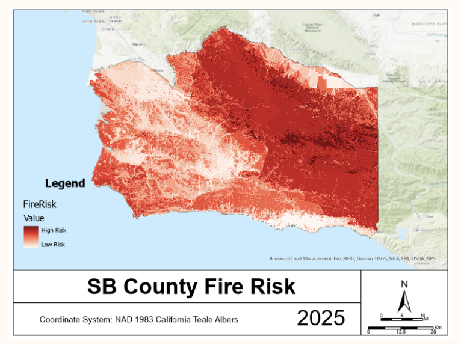

Project Overview
Wildfires pose an ongoing threat to communities across Santa Barbara County, driven by fuel conditions, climatic exposure, and emergency response constraints. The objective of this project was to develop a spatial wildfire risk model that integrates environmental and infrastructure-based factors into a single decision-ready surface.
Using GIS-based multi-criteria analysis, our team evaluated three primary components of wildfire risk: vegetation susceptibility, weather-related exposure (wind and precipitation), and emergency response accessibility. My primary responsibility focused on modeling fire response accessibility through network analysis to quantify travel time from fire stations across the county.
The final output is a weighted composite raster map that identifies areas of elevated wildfire risk based on the combined influence of fuel conditions, climatic factors, and response-time disparities. This project demonstrates the application of spatial modeling techniques to support risk-informed planning and infrastructure decision-making.
Modeling Framework
The wildfire risk model was structured as a multi-criteria spatial framework integrating three core dimensions of risk:
Vegetation Susceptibility:
Fuel type plays a central role in wildfire behavior. Using historical wildfire perimeters and vegetation classification data, vegetation types were ranked based on the proportion of area previously burned. This produced a vegetation risk surface representing relative fuel vulnerability across the county.Climatic Exposure (Wind & Precipitation):
Wind intensity and precipitation patterns influence fire spread potential and fuel dryness. These raster layers were reclassified into standardized risk categories and combined to generate a weather-based exposure surface.Emergency Response Accessibility:
Response time significantly affects suppression effectiveness. Areas located farther from fire stations face increased risk due to delayed containment. This component was modeled using network analysis to estimate travel-time accessibility.
Each of these layers was processed independently and standardized before integration. The final wildfire risk surface was generated through weighted raster analysis, allowing environmental and infrastructure-based factors to be evaluated simultaneously within a unified spatial framework.
Emergency Response Accessibility (Network Analysis)

To quantify emergency response disparities across Santa Barbara County, I conducted a network-based service area analysis using road infrastructure and fire station locations.
Data Inputs
- TIGER/Line Road Network (Vector Line)
- Santa Barbara County Fire Stations (Vector Point)
Methodology
A network dataset was created from the county road layer within ArcGIS Network Analyst. Travel time, measured in minutes, was defined as the cost structure rather than straight-line distance to better reflect realistic emergency response conditions. Fire engines were assumed to travel at an average speed of 45 mph.
Service areas were generated around each fire station using the following time cutoffs (minutes):
- 0, 10, 20, 30, 50, 75, 100, and 150
These intervals produced overlapping response-time polygons representing incremental accessibility zones.
Processing & Risk Classification
Because service areas from multiple stations overlapped, further processing was required to assign each location a single minimum response-time value. The service areas were converted into ranked polygon layers and processed iteratively to remove overlaps, preserving only the shortest available response time for each area.
A response-time risk ranking was then assigned:
- 0–10 minutes → Risk Rank 1 (Lowest Risk)
- 10–20 minutes → Risk Rank 2
- 20–30 minutes → Risk Rank 3
- 30–50 minutes → Risk Rank 4
- 50–75 minutes → Risk Rank 5
- 75–100 minutes → Risk Rank 6
- 100–150 minutes → Risk Rank 7 (Highest Risk)
Longer travel times were classified as higher risk due to delayed suppression capacity and increased opportunity for fire spread.
Output
The final output was a non-overlapping fire response accessibility layer representing the minimum achievable response time across the county. This layer was subsequently converted to raster format and integrated into the weighted wildfire risk model.

Weighted Raster Integration
Following the independent development of each risk component, the Vegetation Risk, Fire Response Risk, and Wind & Precipitation Risk layers were integrated into a single composite wildfire risk surface using raster-based multi-criteria analysis.
Before integration, all layers were projected into a common coordinate system, standardized to the same cell size, and aligned using a shared snap raster to ensure spatial consistency. The Fire Response Risk layer, originally generated as vector polygons, was converted to raster format to allow pixel-level analysis within the Raster Calculator.
Weighting Strategy
To determine appropriate weighting, historical wildfire perimeter data were used as a reference layer to visually assess spatial agreement with each risk surface. Both the Vegetation Risk and Fire Response Risk layers demonstrated strong correspondence with past burn patterns:
- The Vegetation Risk layer captured fuel types with historically higher burn proportions.
- The Fire Response Risk layer highlighted areas where extended travel times may have contributed to larger or more difficult-to-control fires.
In contrast, the combined Wind and Precipitation layer exhibited less spatial variability and weaker alignment with historical fire extents.
Based on this evaluation, the following weighting scheme was applied in the Raster Calculator:
- Vegetation Risk × 2
- Fire Response Risk × 2
- Wind & Precipitation Risk × 1
This 2:2:1 weighting structure reflects the greater explanatory relevance of fuel conditions and emergency accessibility relative to climatic variability in the context of observed fire history.
The resulting weighted raster represents the combined influence of environmental susceptibility and response-time disparities, producing a spatially differentiated wildfire risk surface across Santa Barbara County.

Key Findings
The final weighted wildfire risk surface revealed spatial patterns driven by both environmental fuel conditions and emergency response accessibility.
High-risk zones were concentrated in areas characterized by burn-prone vegetation types combined with extended response times from fire stations. In particular, regions located farther from established fire infrastructure exhibited elevated composite risk values, even when climatic factors remained moderate. This underscores the importance of emergency accessibility as a contributing factor in wildfire vulnerability.
Urban-adjacent areas with shorter travel times generally displayed lower composite risk rankings, reflecting the moderating influence of rapid suppression capacity. However, transitional zones between developed and wildland areas emerged as critical areas of concern, where combustible vegetation and delayed response intersect.
The weighting strategy reinforced the significance of vegetation susceptibility and response-time disparities in shaping the final risk distribution. While wind and precipitation contributed to overall variability, they demonstrated less differentiating power relative to fuel and accessibility factors.
Overall, the model highlights how infrastructure distribution and land cover conditions interact to produce spatially uneven wildfire risk across Santa Barbara County. These findings emphasize the importance of incorporating emergency response accessibility into regional hazard planning frameworks.
Model Limitations & Model Framing
While the final wildfire risk map provides a structured spatial assessment of vulnerability across Santa Barbara County, an important conceptual distinction emerged during the modeling process: wildfire risk is not a single phenomenon, but can represent different stages of fire dynamics.
The model developed in this project most closely reflects wildfire spread risk, rather than ignition probability. The weighting scheme emphasized vegetation susceptibility and emergency response accessibility, highlighting areas where fuel conditions and delayed suppression capacity may allow fires to expand more rapidly once ignited.
However, if the objective were to model wildfire ignition risk, the analytical framework would differ. An ignition-focused model would prioritize variables that influence fire start probability, such as:
- Vegetation and fuel type
- Fuel moisture
- Precipitation deficits
- Slope and topography
- Human infrastructure or ignition sources
In contrast, a spread-focused model would emphasize:
- Wind exposure
- Emergency response time
- Road accessibility
- Fuel continuity
- Terrain features influencing fire behavior
This distinction suggests that the current workflow could be separated into two independent modeling frameworks, each calibrated with its own weighting structure and validation approach. Such separation would improve clarity of purpose and allow for more precise risk communication.
Additionally, the applied 2:2:1 weighting scheme was heuristic rather than statistically calibrated. Although informed by visual comparison with historical fire perimeters, future iterations could incorporate spatial autocorrelation tests, hotspot analysis, or sensitivity analysis to quantitatively validate weighting decisions.
Data integration also posed technical challenges. Raster and vector datasets from multiple sources required careful projection alignment, cell-size standardization, and overlap resolution. Intersecting wildfire perimeters with vegetation layers introduced potential duplication of burned areas due to overlapping fire histories, requiring cautious interpretation.
Future improvements could include incorporating slope, fuel moisture, and additional climatic indices, as well as performing formal model validation against past fire spread patterns.
Despite these limitations, the project demonstrates how multi-criteria spatial analysis can integrate environmental and infrastructure-based variables into decision-support tools for hazard planning.
Project Presentation
The full project presentation detailing data sources, modeling workflows, and results is displayed below.
Citation
@online{lescano2025,
author = {Lescano, Lukas},
title = {Modeling {Wildfire} {Risk} and {Emergency} {Response}
{Accessibility} in {Santa} {Barbara} {County}},
date = {2025-12-14},
url = {https://lperusa7.github.io/lukaslescano.github.io/posts/Fire_Risk_SB_proj/},
langid = {en}
}